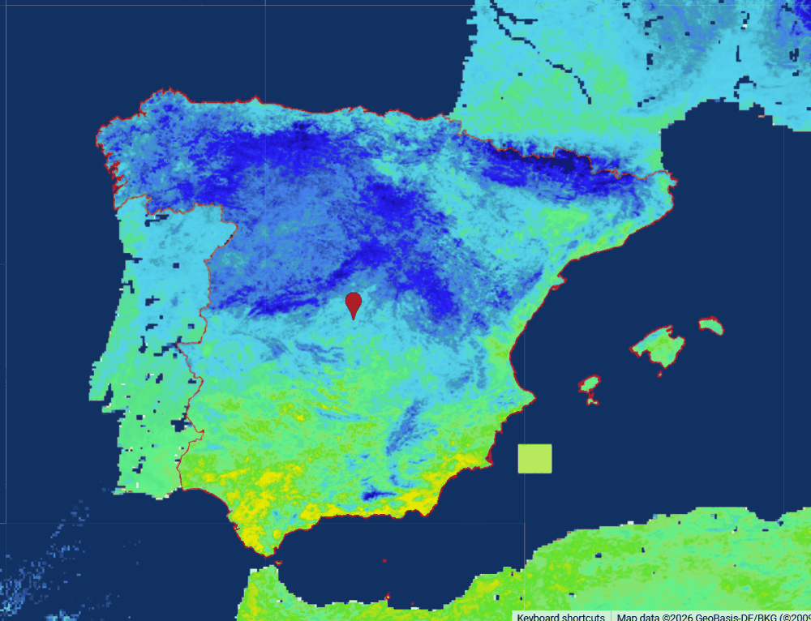
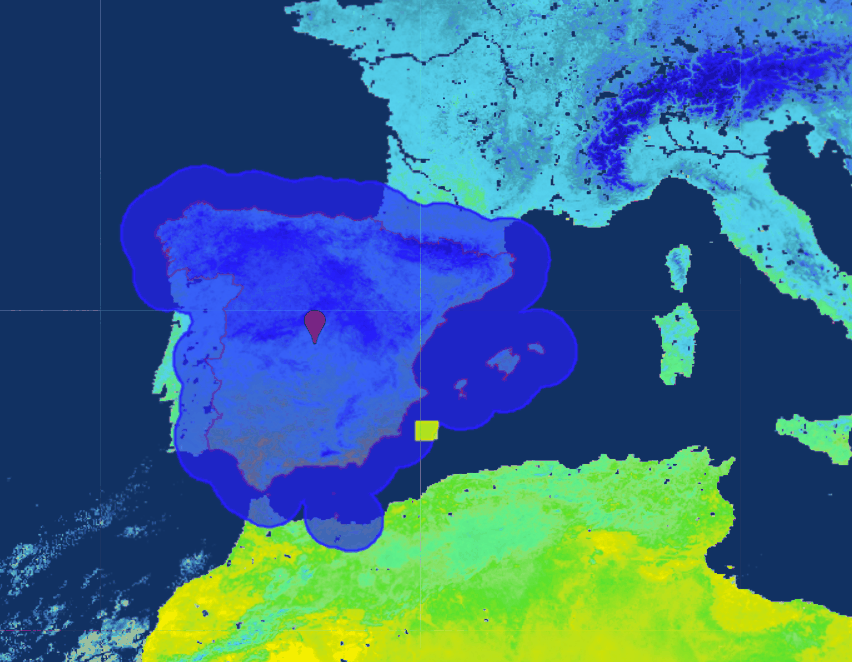
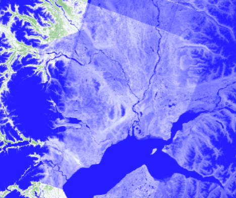
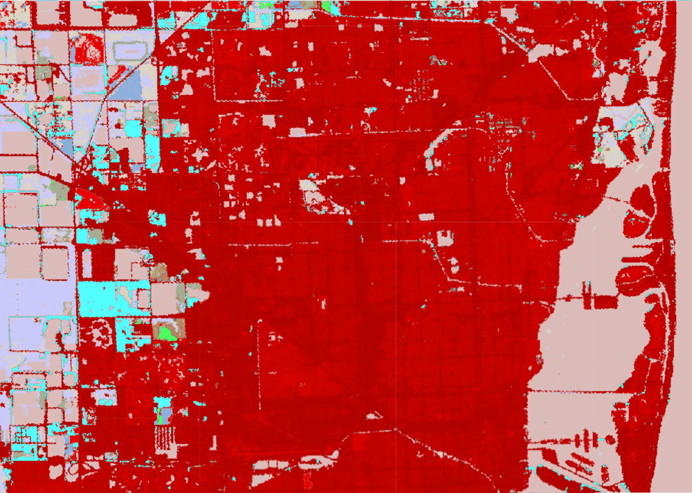
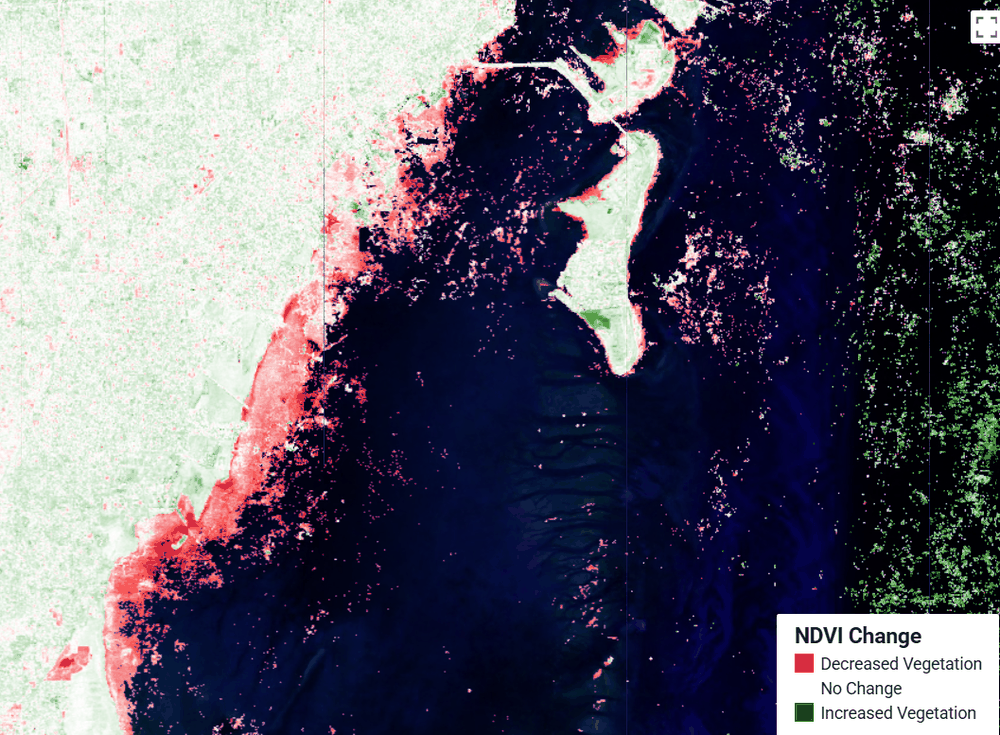
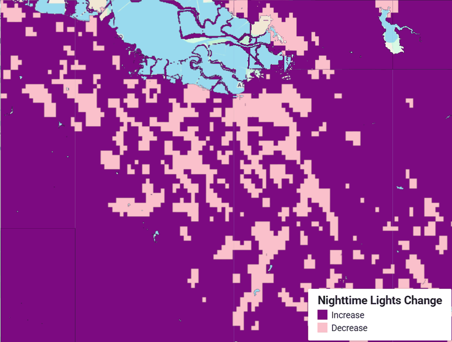
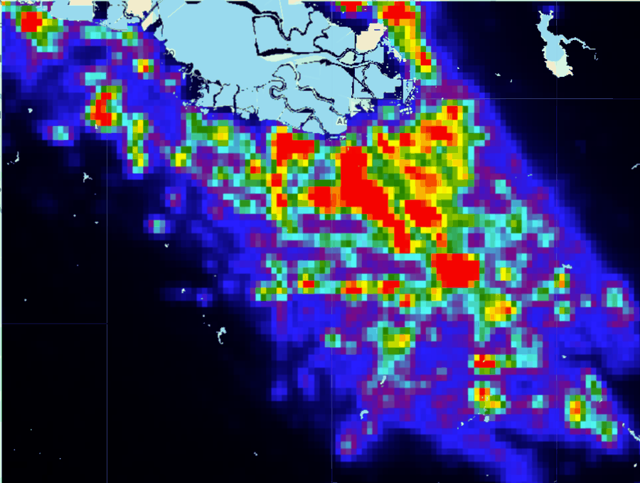
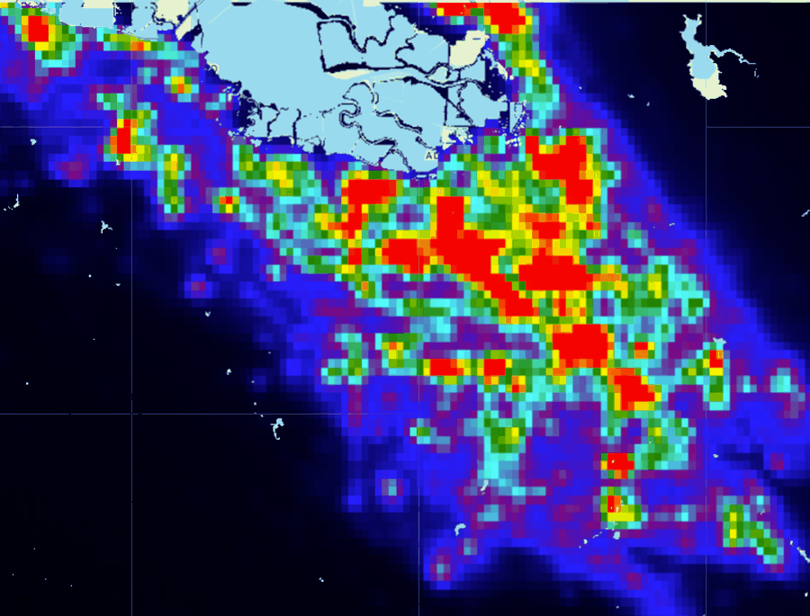

Earth Engine Method Studies
Five short studies, each pointed at a different remote sensing problem — classifying a coastline, reading a thermal archive, treating cloud as a measurement rather than a nuisance, detecting change two ways, and asking whether a city is really getting brighter.
All scripts on GitHubThese come out of coursework, but each one is a study area I picked and a question I framed. What ties them together is less the subject matter than a habit: the interesting part of a remote sensing result is usually the thing that could make it wrong — a display stretch inherited from a different sensor, a validation set too small to support its own decimal places, a city that swapped out every streetlight in the middle of the study period.

Classifying a coastline, and checking whether it worked
Florida Keys & Everglades · Sentinel-2
A five-year Sentinel-2 median composite over south Florida, classified into developed, herbaceous, water, and land. Cloud is handled in two tiers — a scene-level filter, then a per-pixel cloud-probability mask — because neither alone is enough over a subtropical marine area.
The scene is classified twice: k-means with seven clusters and Random Forest with four trained classes. Asking for more clusters than the scheme has is deliberate — the extras split water by depth, real structure the four-class scheme discards.
Validation gave 95.8% accuracy, kappa 0.94. The useful part is underneath: water and developed classified perfectly, and the only error was land read as herbaceous — the class with 12 training points against water's 52. Difficulty tracked sample size. The headline figure rests on 24 validation samples drawn from the same polygons as the training data, so it is an upper bound.
- Supervised classification
- k-means
- Random Forest
- Confusion matrix
- Cloud masking
- Compositing


Reading a thermal archive without misreading it
Spain · MODIS LST + Pathfinder SST
MODIS land surface temperature paired with sea surface temperature offshore, November 2022. Both are stored as scaled integers rather than physical values, which is where this kind of analysis usually goes wrong.
The first display range, 13000–16500 raw, works out to −13 °C to +57 °C — seventy degrees for Iberia in November, so the map rendered as one flat colour. Reading the histogram first gave 13800–15500, or 3 °C to 37 °C. Same image, same palette; only the stretch changed.
The second half buffers the coastline 100 km offshore and intersects it with an area of interest to build and measure a coastal zone — structurally the same operation as delineating a jurisdictional band for marine spatial planning.
- Scaled-integer data
- Histogram-driven stretch
- Temporal reducers
- Buffers & intersection
- Zonal area

Cloud as the measurement
Anchorage, Phoenix, Los Angeles · Landsat 8
Every other study here treats cloud as contamination. This one makes a per-image cloud likelihood score the variable, aggregated into an annual time series for three cities.
The result says more about the metric than the cities. The algorithm keys on brightness, coolness, and a snow index, so it cannot separate cloud from snow — Anchorage carries snow much of the year and scores high partly for that reason, flattering the hypothesis it was meant to test.
The second half differences cloud-filtered against unfiltered mean NDVI. It runs broadly negative, the opposite of the naive expectation, and the likely cause is sampling bias: in a maritime subarctic climate the clear days are disproportionately cold and snow-covered, so filtering for low cloud quietly filters for winter.
- simpleCloudScore
- Time series aggregation
- Image properties
- Sampling bias
- NDVI


Two ways to detect change
South Miami-Dade & the Lower Keys · NLCD, Landsat 5 & 8
The same eighteen years read categorically and continuously. The first groups NLCD classes and finds gain and loss by boolean comparison; the second differences NDVI between 2001 Landsat 5 and 2019 Landsat 8, catching gradual thinning that never crosses a class boundary.
The first run showed a great deal of apparent development loss, implausible in Miami. The cause was the class grouping — using deciduous forest alone made an evergreen stand register as forest loss. The error was in the categories, not the data.
The NDVI half carries its own flaw: the quality mask uses Collection 1 bit positions against Collection 2 data, so it lets cloud shadow through, and shadow depresses NDVI in a way that reads as vegetation loss.
- Change detection
- Class remapping
- Boolean masking
- QA bitmasks
- Multi-sensor NDVI



Is the city actually getting brighter?
Santa Clara County, CA · VIIRS 2016 vs 2023
Annual VIIRS composites for the South Bay differenced across seven years, split into gain and loss by area. The arithmetic says 83.3% of the area brightened and 16.7% dimmed.
San José replaced every streetlight in the city with LED, finishing in early 2023 — inside this window. The VIIRS Day/Night Band is comparatively insensitive to blue-rich LED output, while the sodium lamps they replaced emitted strongly where the sensor is most responsive, so a converted street reads dimmer even when lit as brightly. Note where the pink sits: it follows the street grid.
The percentage is also a sign test with no magnitude threshold — a dark hillside pixel drifting from 0.04 to 0.05 nW counts the same as downtown moving from 60 to 70. The defensible reading is that lit area expanded while the lit core dimmed for reasons partly about lamps rather than activity.
- VIIRS DNB
- Image differencing
- Water masking
- Area accounting
- Sensor confounds